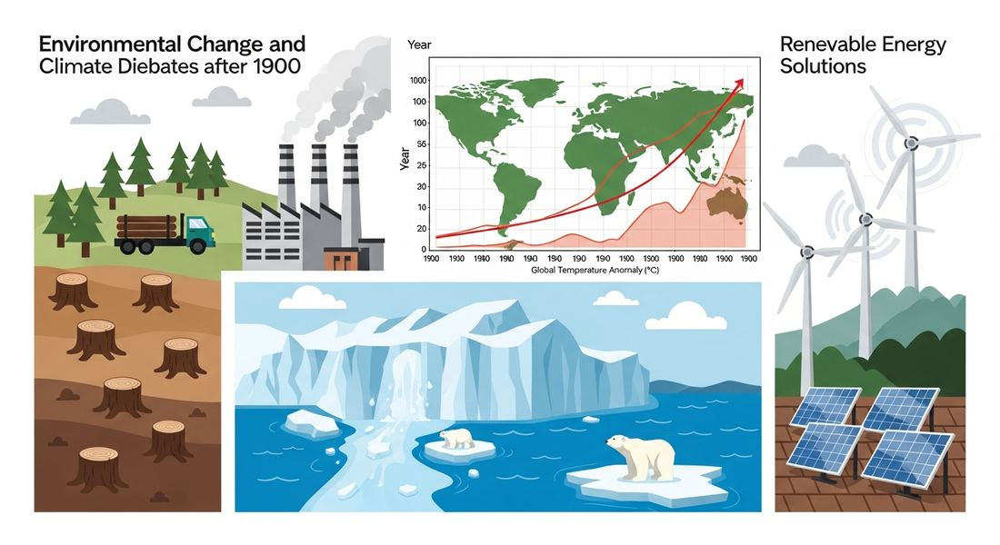

9.3 Technological Advances: Debates About the Environment After 1900
- LO-A: Human activity degraded the environment at scale: Industrial growth, agricultural expansion, urbanization, and population growth led to deforestation, desertification, declining air quality, and freshwater depletion on a global scale. Competition over scarce resources intensified between nations and communities. Greenhouse gases fueled climate debates: The burning of fossil fuels released carbon dioxide and other gases that trapped heat in the atmosphere. Scientific consensus emerged that this was causing global warming and climate change. But political and economic interests made international action difficult, the "debates about the nature and causes of climate change" were as much political as scientific. Environmental damage was global but unequal: The richest nations produced the most pollution and consumed the most resources, but the worst impacts often fell on the poorest communities and nations, island nations threatened by rising seas, sub-Saharan Africa threatened by desertification, poor urban communities breathing polluted air. International responses emerged but were limited: Treaties like the Kyoto Protocol (1997) and the Paris Agreement (2015) attempted to coordinate global responses to climate change, but were weakened by non-participation by major emitters and the difficulty of balancing economic development with environmental protection.
Try each question before revealing the answer.
1. What is desertification and why did it accelerate in the 20th century?
2. What is the greenhouse effect and how do human activities intensify it?
3. Why was international cooperation on climate change so difficult to achieve?
- Explain the causes and effects of environmental changes in the period from 1900 to present, including human-caused deforestation, desertification, air quality decline, and freshwater competition, and the debate over greenhouse gases and climate change
Tap a term for its definition.
-
Definition: The large-scale removal of forests, primarily for agriculture, logging, and urban development. Significance: Destroys ecosystems, releases stored carbon, reduces biodiversity, and contributes to soil erosion and desertification.
-
Definition: The process by which fertile land becomes desert due to overgrazing, deforestation, drought, or poor agricultural practices. Significance: Threatens food security and displaces populations, particularly in the Sahel region of Africa.
-
Definition: Gases (CO2, methane, nitrous oxide) that trap heat in Earth's atmosphere. Significance: Human burning of fossil fuels dramatically increased atmospheric greenhouse gas concentrations, driving climate change debates.
-
Definition: Long-term shifts in global temperatures and weather patterns, accelerated since industrialization by human greenhouse gas emissions. Significance: The CED notes this contributed to intense "debates about the nature and causes" of environmental change, debates that shaped politics, economics, and international relations.
-
Definition: The increasing shortage of clean, accessible freshwater as human consumption exceeds natural replenishment rates. Significance: By the 21st century, water scarcity affected over 2 billion people and was a growing source of international competition and conflict.
-
Definition: A 1997 international treaty committing industrialized nations to reduce greenhouse gas emissions. Significance: First major international climate agreement; weakened by the US refusal to ratify and exemptions for major developing emitters like China and India.
🌲 Deforestation and Desertification: Land Under Pressure (KC-6.1.II.A)
The 20th century brought unprecedented pressure on the world's land resources. The AP CED identifies a key development: "As human activity contributed to deforestation, desertification, a decline in air quality, and increased consumption of the world's supply of fresh water, humans competed over these and other resources more intensely than ever before."
Deforestation accelerated dramatically in the 20th century, driven by agricultural expansion, commercial logging, and urbanization. The Amazon rainforest, the world's largest tropical forest, lost nearly 20% of its total area between 1970 and 2020, cleared primarily for cattle ranching and soybean cultivation. Southeast Asian forests were logged for timber and palm oil. African forests were cleared for small-scale farming by growing populations. The consequences were profound: deforestation destroyed biodiversity (tropical forests contain roughly half of all species on Earth), accelerated soil erosion (trees hold soil together), disrupted water cycles (forests generate rainfall through transpiration), and released vast stores of carbon, accelerating climate change.
Desertification converted an estimated 12 million hectares of productive land to desert each year by the late 20th century. In Africa's Sahel, the semi-arid zone south of the Sahara stretching across a dozen countries, desertification caused recurring famine and displaced millions of people. Overgrazing by growing livestock populations stripped vegetation; deforestation removed trees whose roots held moisture; declining rainfall (partly caused by deforestation itself) killed remaining plants. The Sahel famines of the 1970s and 1980s, which killed hundreds of thousands, were partly consequences of desertification combined with drought.

AI-generated illustration (Google Gemini, 2025), commercially licensed.
💧 Freshwater: The Contested Resource (KC-6.1.II.A)
Fresh water, essential for drinking, agriculture, and industry, became an increasingly scarce and contested resource as the 20th century progressed. Although water covers 71% of Earth's surface, only about 2.5% is fresh water, and most of that is locked in glaciers and ice caps. Less than 1% of Earth's water is accessible for human use. As the global population grew from 1.6 billion in 1900 to over 8 billion by 2024, and as agricultural, industrial, and urban water demand increased even faster, competition over freshwater intensified dramatically.
Underground aquifers, vast stores of groundwater accumulated over thousands of years, were depleted at rates far exceeding natural recharge. The Ogallala Aquifer in the American Great Plains, which supports much of US grain and beef production, was being depleted by irrigation many times faster than it was being replenished. In South Asia, water tables were falling beneath major agricultural regions in India and Pakistan. Glacier retreat in the Himalayas threatened the freshwater supply of hundreds of millions of people in South and Southeast Asia whose rivers were fed by glacial melt. By the 21st century, water scarcity affected over 2 billion people and was a growing source of international tension, some analysts predicted "water wars" in the Middle East and other water-stressed regions.
🌡️ Greenhouse Gases and the Climate Debate (KC-6.1.II.B)
The most politically contentious environmental issue of the late 20th and early 21st centuries was climate change. The science was clear: burning fossil fuels released carbon dioxide that had been stored underground for millions of years, rapidly increasing atmospheric CO2 concentrations and warming the planet. The AP CED describes this carefully: "The release of greenhouse gases and pollutants into the atmosphere contributed to debates about the nature and causes of climate change."
The scientific consensus was established by the late 1980s: the Intergovernmental Panel on Climate Change (IPCC), founded in 1988, synthesized thousands of studies and concluded that human greenhouse gas emissions were warming the planet, with potentially catastrophic consequences, rising sea levels, more extreme weather events, disruption of agricultural systems, and threats to biodiversity.
But the debates the CED references were real and consequential. While the scientific consensus was strong, political and economic opposition was fierce. Fossil fuel industries spent billions funding organizations that cast doubt on climate science. Governments of major emitters, the US, China, India, resisted mandatory emission reductions that they feared would slow economic growth. The Kyoto Protocol (1997), the first binding international climate agreement, was never ratified by the United States (the world's largest historical emitter) and exempted rapidly developing China and India. The Paris Agreement (2015) achieved broader participation but relied on voluntary, nationally determined targets rather than binding obligations.
🌍 Environmental Inequality: Who Bears the Cost?
One of the most significant dimensions of the environmental crisis was its deeply unequal character. The nations that produced the most greenhouse gas emissions and consumed the most resources were primarily wealthy industrialized nations. But the nations and communities that suffered most severely from the consequences were often the world's poorest.
Low-lying island nations, Tuvalu, Kiribati, the Maldives, faced potential complete inundation from rising sea levels caused by climate change produced primarily by wealthy nations' emissions. Sub-Saharan Africa, which had contributed negligibly to global greenhouse gas emissions, faced severe threats from changing rainfall patterns, desertification, and agricultural disruption. Bangladesh, one of the world's most densely populated and poorest nations, faced increasing flood risk from both sea level rise and intensified monsoons. Meanwhile, wealthy nations had far more resources to build sea walls, develop drought-resistant crops, and adapt to changing conditions.
This inequity became a major source of tension in international climate negotiations. Developing nations argued that they had a right to develop their economies the way wealthy nations had, using cheap fossil fuels, and that wealthy nations should bear the costs of the climate damage their historical emissions had caused. The debates the CED references were thus not only about scientific facts but about justice, history, and the distribution of costs and benefits in a globalized world.
These videos will help you review Technological Advances: Debates About the Environment After 1900 and solidify key concepts before your exam.
- Human activities including agriculture, industry, and urbanization that contributed to deforestation, desertification, and freshwater depletion
- Natural disasters that depleted global reserves of freshwater and timber
- Government policies that deliberately restricted access to natural resources to create scarcity
- The rise of environmental movements that prevented industrial development in resource-rich regions
- scientific uncertainty about whether the climate was actually warming.
- philosophical debates about whether nature had intrinsic value independent of human interests.
- disagreements between historians about whether industrialization caused environmental damage.
- political and economic disputes over how to respond to well-established scientific findings on greenhouse gas emissions.
- deliberate environmental destruction by colonial governments to punish resistant populations.
- overgrazing, deforestation, and poor agricultural practices that reduced land resilience, worsened by drought.
- natural climate variation that could not have been prevented by human action.
- the global spread of chemical fertilizers that contaminated African soil.
- Most nations doubted the scientific evidence for climate change.
- Environmental movements opposed international agreements as insufficient.
- Major emitters refused to participate or were exempted, limiting the agreement's impact on global emissions.
- The agreements were primarily focused on deforestation rather than fossil fuel emissions.
- Wealthy nations suffered the worst environmental consequences of industrialization.
- Environmental damage was distributed equally across all nations regardless of wealth.
- Developing nations were the primary producers of greenhouse gases due to rapid industrial growth.
- Wealthy nations produced most pollution while poorer nations often bore the worst consequences.